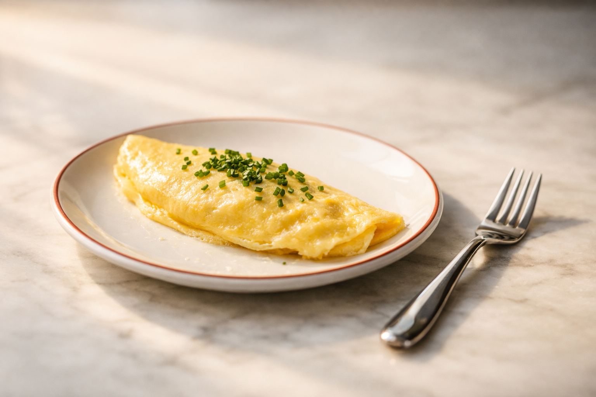
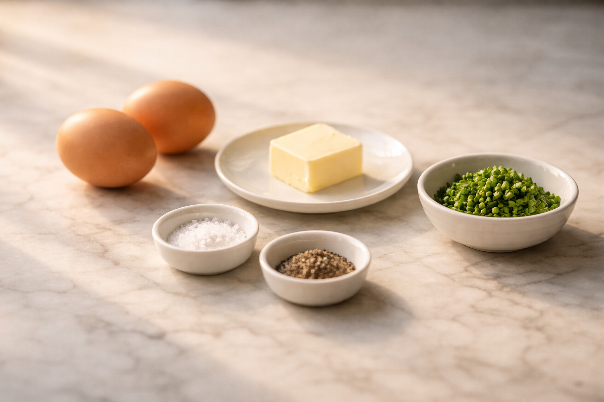
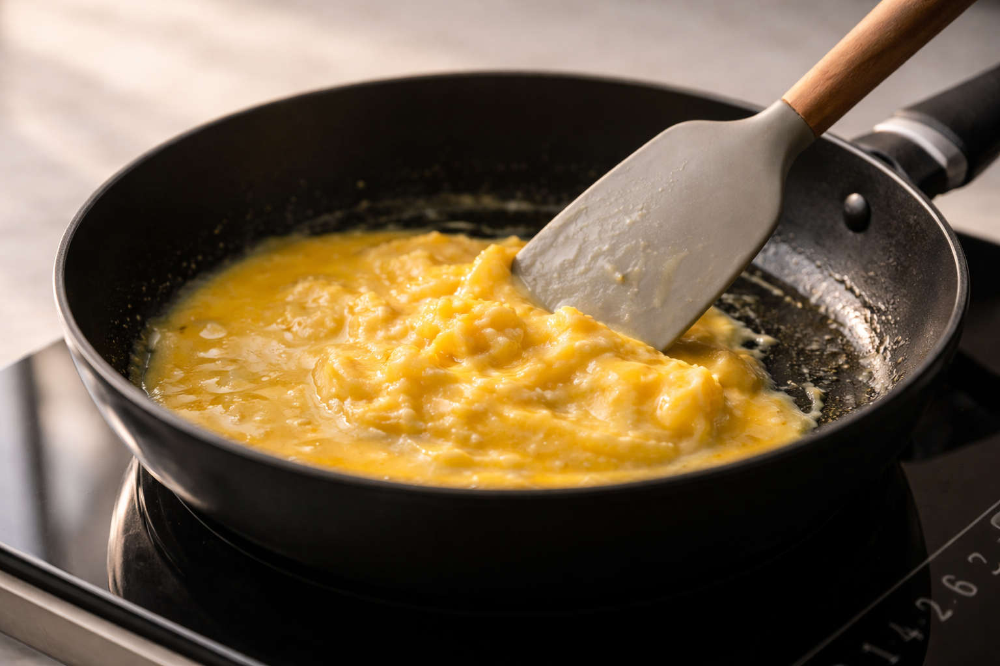
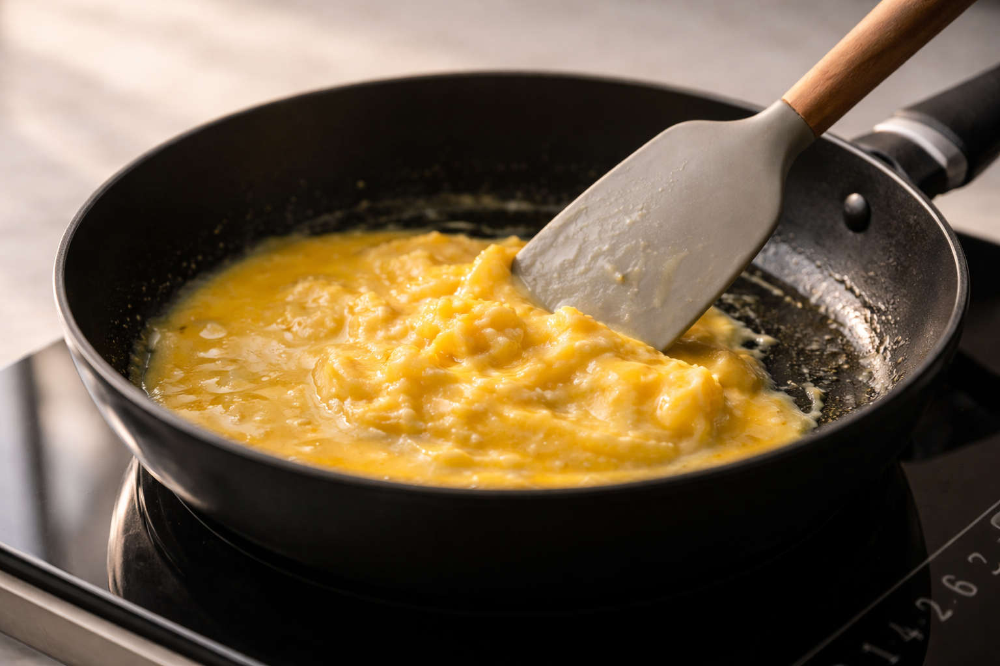

Starting your day with an omelette is a simple and balanced choice.
It’s warm, filling, and quick to make, giving you real energy without feeling heavy or rushed.
Stable energy — protein helps keep energy levels steady
Better focus — staying full helps you concentrate longer
Muscle support — protein supports strength and recovery
Lasting fullness — keeps you satisfied without slowing you down
Beyond nutrition, making an omelette is a small daily ritual.
A few quiet minutes of simple cooking help you slow down and start the day with intention.

Ingredients
Essential
2 eggs
1 tbsp butter
1 pinch salt
1 pinch black pepper
1 handful herbs
Optional
1 tbsp milk
30 g cheese
30 g vegetables

Cooking
Crack the eggsTap each egg gently on a flat surface and open it into a bowl to avoid shell pieces.
Whisk lightlyMix just until the yolks and whites come together. No need to overbeat.
Season earlyAdd salt and pepper now so the eggs are evenly seasoned from the start.
Heat the panUse low to medium-low heat. The pan should be warm, not hot.
Add butterLet it melt on the warm pan. It should foam gently, not brown.
Cook and stirPour in the eggs and move them slowly with a spatula until soft curds form.
Fold the omeletteWhen mostly set but still soft, fold it gently in half.
Serve and finishSlide onto a plate and sprinkle with fresh herbs of your choice.
 
